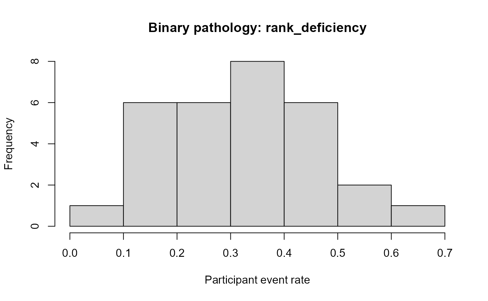

Pathological Simulation Scenarios
Source:vignettes/pathological-simulation-scenarios.Rmd
pathological-simulation-scenarios.RmdThe dedicated pathology generators make failure cases reproducible instead of leaving them as prose-only limitations.
Binary scenarios
binary_scenarios <- c(
"null_contrast",
"weak_information",
"severe_imbalance",
"near_separation",
"omitted_random_slope",
"sparse_item_structure",
"all_zero_participants",
"rank_deficiency",
"missing_outcomes"
)
binary_results <- lapply(
binary_scenarios,
simulate_binary_pathology,
seed = 2026
)
data.frame(
scenario = binary_scenarios,
expected_gate = vapply(
binary_results,
`[[`,
character(1),
"expected_gate"
)
)
#> scenario expected_gate
#> 1 null_contrast pass_or_review
#> 2 weak_information review
#> 3 severe_imbalance review_or_fail
#> 4 near_separation review
#> 5 omitted_random_slope review
#> 6 sparse_item_structure review
#> 7 all_zero_participants review_or_fail
#> 8 rank_deficiency fail
#> 9 missing_outcomes failA rank-deficient design is an explicit structural failure:
rank_failure <- simulate_binary_pathology(
"rank_deficiency",
seed = 2026
)
evaluate_pathological_simulation(rank_failure)
#>
#> Pathology evaluation
#> Family: binary
#> Scenario: rank_deficiency
#> Expected gate: fail
#> Structural status: fail
#> Reason: The prepared fixed-effects design matrix is rank deficient.
#> Structural status is not a posterior adequacy decision. Review the expected failure mechanism and diagnostic context.
plot(rank_failure)
Duration scenarios
duration_scenarios <- c(
"null_ratio",
"high_group_heterogeneity",
"weak_information",
"severe_imbalance",
"heavy_tailed_contamination",
"mixture",
"censoring",
"incorrect_unit",
"zero_duration",
"negative_duration"
)
duration_results <- lapply(
duration_scenarios,
simulate_duration_pathology,
seed = 2026
)
data.frame(
scenario = duration_scenarios,
expected_gate = vapply(
duration_results,
`[[`,
character(1),
"expected_gate"
)
)
#> scenario expected_gate
#> 1 null_ratio pass_or_review
#> 2 high_group_heterogeneity review
#> 3 weak_information review
#> 4 severe_imbalance review_or_fail
#> 5 heavy_tailed_contamination review_or_fail
#> 6 mixture fail_adequacy
#> 7 censoring fail_contract
#> 8 incorrect_unit fail_contract
#> 9 zero_duration fail
#> 10 negative_duration failCensoring and incorrect measurement units are semantic contract failures even when their numeric values could otherwise pass a simple range check.
censored <- simulate_duration_pathology("censoring", seed = 2026)
wrong_unit <- simulate_duration_pathology("incorrect_unit", seed = 2026)
evaluate_pathological_simulation(censored)
#>
#> Pathology evaluation
#> Family: duration
#> Scenario: censoring
#> Expected gate: fail_contract
#> Structural status: fail
#> Reason: Censored observations violate the uncensored contract.
#> Structural status is not a posterior adequacy decision. Review the expected failure mechanism and diagnostic context.
evaluate_pathological_simulation(wrong_unit)
#>
#> Pathology evaluation
#> Family: duration
#> Scenario: incorrect_unit
#> Expected gate: fail_contract
#> Structural status: fail
#> Reason: The stored values and declared measurement unit disagree.
#> Structural status is not a posterior adequacy decision. Review the expected failure mechanism and diagnostic context.Heavy tails and mixtures are adequacy stress tests. They do not trigger an automatic switch to another likelihood.